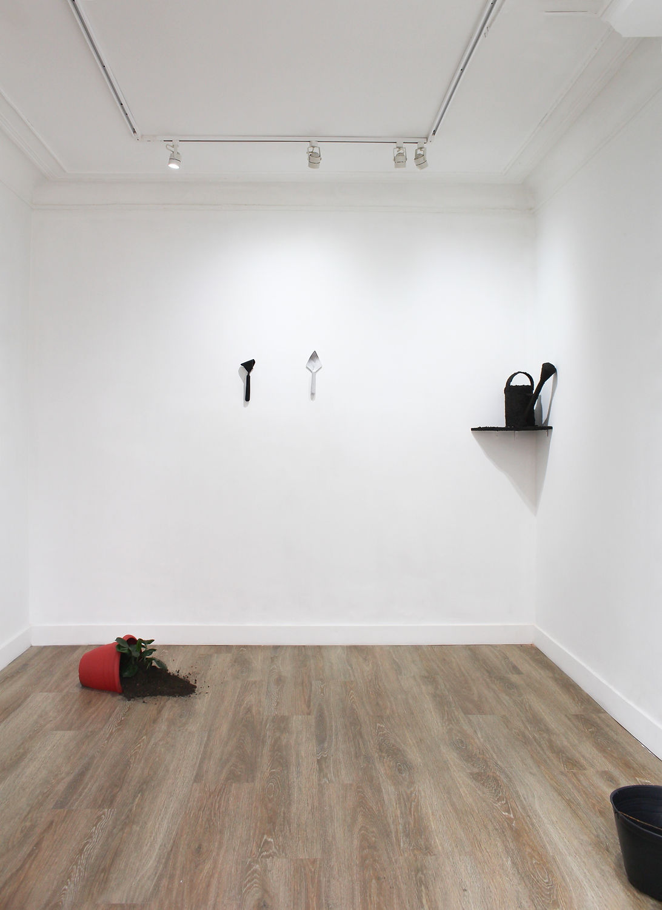
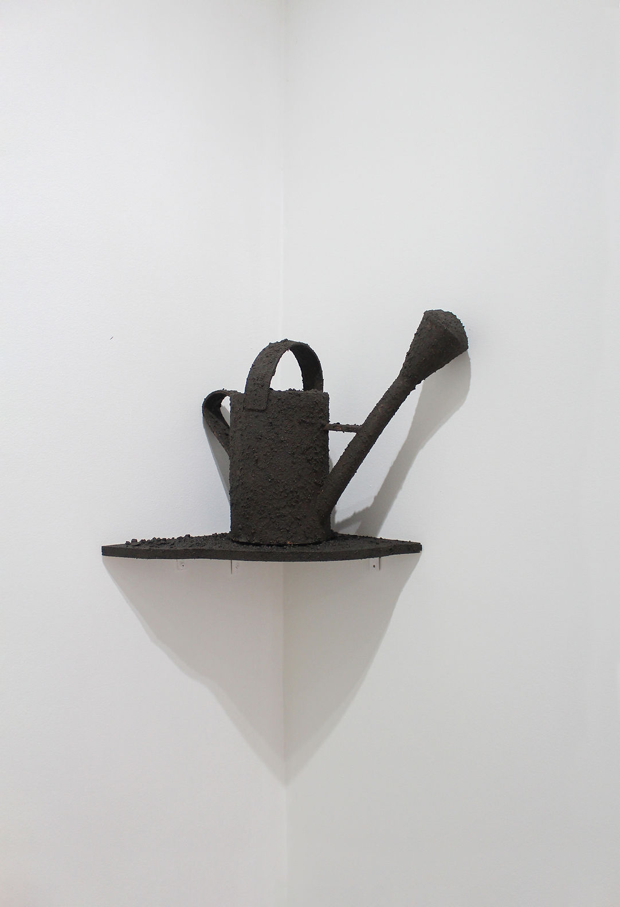
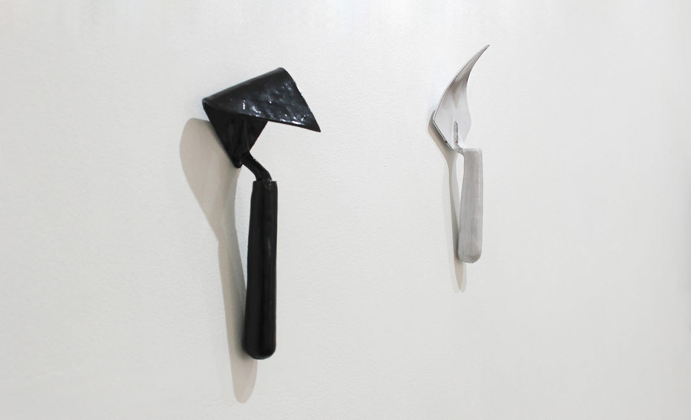
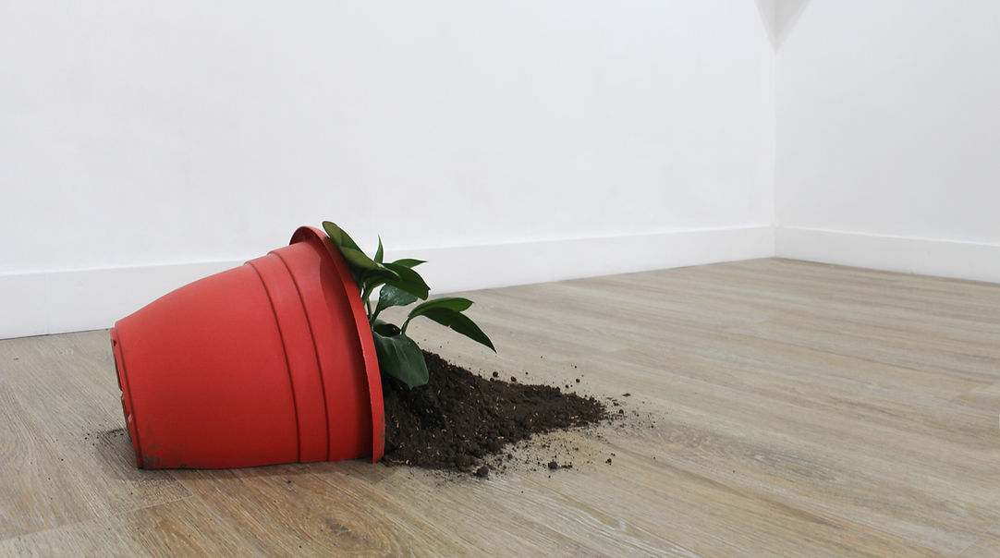
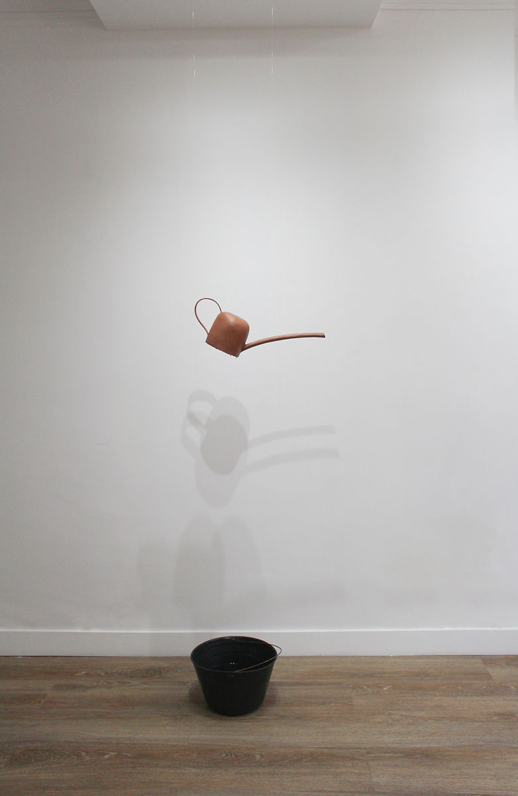
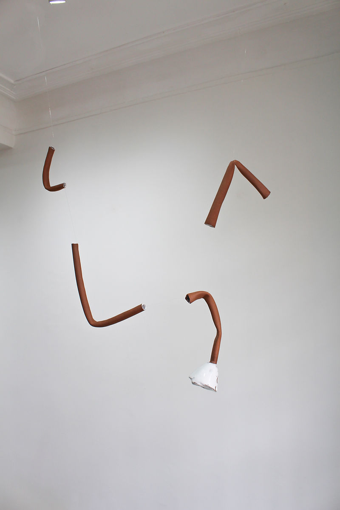
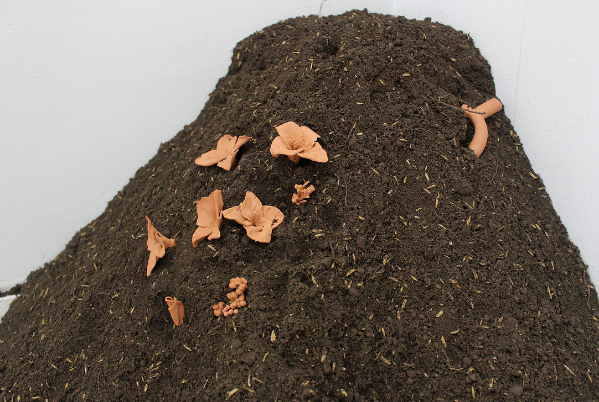
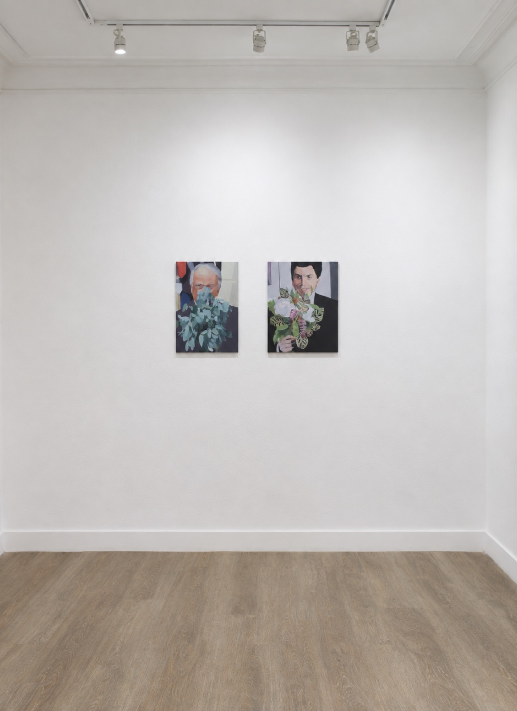
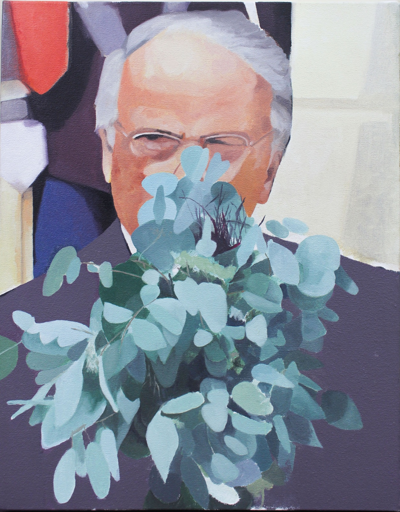
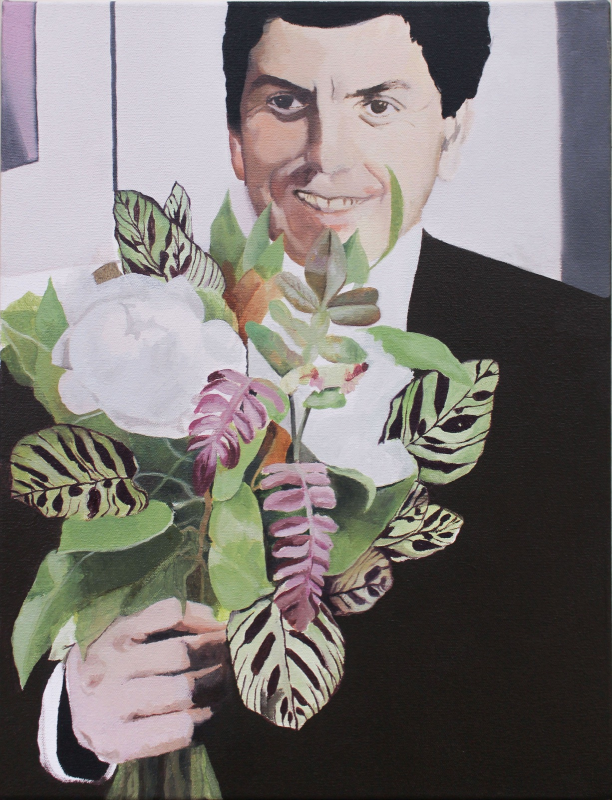

antejardín
7 de Junio - 15 de Julio 2025
FLOTANTE - Bogotá.
Las fuentes son dispositivos que tradicionalmente han cumplido un rol ornamental, especialmente en los escenarios del jardín. El antejardín, ese espacio intermedio entre la calle y la casa, se convierte así en un escenario ambiguo: no completamente público, no del todo privado. Me interesó su carácter liminal, su condición de umbral, y quise pensar qué ocurre cuando se altera el orden habitual de los objetos que lo habitan.
Antejardín explora la funcionalidad —o la no funcionalidad— de los elementos que suelen poblar este espacio: herramientas, recipientes, palas, tierra, regaderas y fuentes. Más que reproducir su forma o su uso, me propuse operar sobre ellos, desajustarlos, dejarlos entrever su fragilidad.
Recrear un antejardín implicó entonces una pregunta sobre el orden de las cosas: una regadera cubierta de tierra, unas palas dobladas, una matera caída, una montaña de tierra con flores en cerámica que sobresalen, una tubería averiada suspendida en el aire. Estos artefactos cerámicos —regaderas sin orificios, recipientes que escurren, fuentes incompletas— no buscan resolver una función, sino convertirse en preguntas sobre ella.
Estas alteraciones formales y simbólicas señalan la fragilidad de las estructuras que organizan lo doméstico, lo decorativo, lo útil. Como en una fuente, el agua no siempre sigue el cauce previsto: a veces se desvía, se estanca o desaparece.

Vista general de la exposición.

Regadera. Cerámica, tierra. Dimensiones variables. 2025

Cerámica. Herramientas. 40 x 25 cms. 2025

Instalación. Matera plástica, plantas, tierra. 50 x 40 x 25 cms. 2025

Instalación. Regadera en cerámica, base plástica, agua. 170 x 20 x 30 cms. 2025

Instalación. Cerámica. 80 x 40 x 10 cms. 2025

Instalación. Cerámica, tierra. 80 x 40 x 30 cms. 2025

De la serie “Plantas y poder”. Pintura. Óleo sobre lienzo. 35 x 40 cms. 2026.

Detalle. De la serie “Plantas y poder”. Pintura. Óleo sobre lienzo. 35 x 40 cms. 2026.

Detalle. De la serie “Plantas y poder”. Pintura. Óleo sobre lienzo. 35 x 40 cms. 2026.